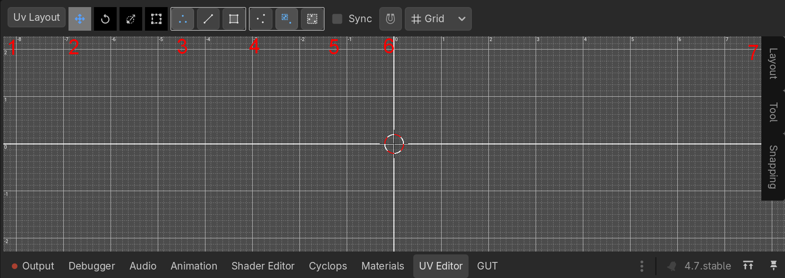
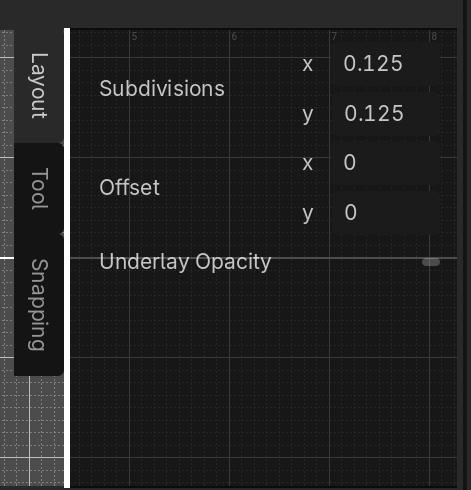

UV Editor
The UV Editor allows you to edit how textures are laid out on the surface of meshes. This is done by manipulating the values of UVs.

1 - Menu
This is a drop down menu that provides access to various commands.
2 - Tools
These tools allow you to manipulate UVs in the viewport using the mouse and keyboard.
- Move Tool
- Rotate Tool
- Scale Tool
- Box Transform Tool
3 - UV Components
Allows you to select UVs based on the geometry they're connected to
- Vertex - Select UVs independently
- Edge - Select UVs that are connected by an edge
- Face - Select UVs that are all part of the same face
4 - UV Adjency
Automatically select other UVs if they have certain properties. This can be used to automatically adjust UVs that share an edge but are on different faces.
- Independent - All UVs are independent.
- Different Face, Same UV - If two UVs have the same UV value but are on different faces, make the same adjustment to both of them.
- Different Face, Different UV - If two UVs share the same vertex, adjust both of them by the same amount whether they are the same or not.
5 - Sync
If selected, selecting a UV component in the UV editor will also cause the coresponding mesh vertex, edge or face to be selected in the 3D editor.
6 - Snapping
When the snap button is pressed, moving vertices will snap according to the snapping rules. Not all tools will use snapping.
The drop down menu allows you to switch between various types of snapping.
- Grid - Snap to the UV grid coordinates
- Vertex - Snap to other UV points
7 - Sidebar Panels
Click on the tabs on the right side of the editor window to show panels that allow you to adjust settings for various aspects of the UV editor.

- Layout - Adjust general proverties of the layout editor, such as the grid size.
- Tool - Some tools have settings that can be adjusted. They will appear in this tab when the coresponding tool is selected.
- Snapping - Adjust settings of the current snapping settings.
Support
If you found this software useful, please consider buying me a coffee on Kofi. Every contribution helps me to make more software: